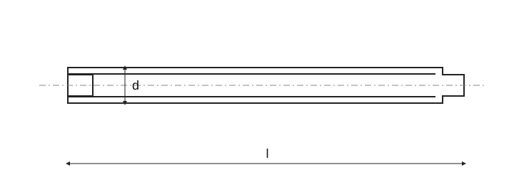

Stavěcí šrouby s vnitřním šestihranem a čípkem · Normový kontext

| Položka | Normový kontext |
|---|---|
| ISO | Příbuzná norma není automaticky rozměrově zaměnitelná náhrada staré ČSN nebo DIN. Rozměry nejsou pouhou změnou roku aktualizované. |
| — | Úplné znění normy je potřeba k ověření rozměrů, tolerancí a všech podmínek. |